Рязанская область
Центр духовно-нравственного воспитания «Отечество»
Духовно-нравственное, патриотическое и спортивно-оздоровительное воспитание для обучающихся школ-интернатов Рязанской области

О нас
АВТОНОМНАЯ НЕКОМЕРЧЕСКАЯ ОРГАНИЗАЦИЯ ДОПОЛНИТЕЛЬНОГО ОБРАЗОВАНИЯ И ВОСПИТАНИЯ «ЦЕНТР ДУХОВНО-НРАВСТВЕННОГО ВОСПИТАНИЯ ОТЕЧЕСТВО»
Проект программы АНО ДОВ ЦДНВ «Отечество» направлен на проведение мероприятий по духовно-нравственному, патриотическому и спортивно-оздоровительному направлениям для обучающихся школ-интернатов Рязанской области.
Цели создания и деятельности Организации:
- Осуществление образовательной деятельности по дополнительным образовательным программам
- Удовлетворение потребностей граждан в интеллектуальном, нравственном развитии посредством получения дополнительного образования
- Накопление, сохранение и приумножение нравственных, культурных и научных ценностей общества
- Распространение знаний среди населения, повышение образовательного и культурного уровня граждан
- Духовно-нравственное воспитание
Главные задачи Организации:
- Дополнительное образование специалистов различного профиля
- Реализация религиозного (Православного) компонента образования и воспитания
- Обеспечение самоопределения личности, создание условий для её самореализации
- Всестороннее развитие личности, повышение культурного и нравственного уровня
- Осуществление совместных проектов и программ с другими организациями
- Разработка и поддержка творческих, научно-практических проектов и образовательных программ
В процессе реализации основной цели деятельности Организация стремится воспитывать на основе Православного мировоззрения целостную личность, подготовленную к освоению различных ступеней образования и к деятельности на любом общественно полезном поприще.
Отчёты
Финансовая и бухгалтерская отчётность организации
Проекты
«От чистого истока я начинаю путь» — профессиональное ориентирование детей-сирот в Рязанской области
Период реализации: 01.07.2023 — 31.01.2024
В наши дни становится актуальной проблема профориентации детей в школах-интернатах. Сейчас многие из детей не знают, кем они будут в дальнейшей жизни — ни в старших классах, ни после окончания основного образования.
Основные проблемные категории:
- Дети из неблагополучных и асоциальных семей
- Дети из семей, нуждающихся в социально-экономической и социально-психологической помощи
Идея проекта была направлена на раннюю профессиональную ориентацию воспитанников 8 и 9 классов Михайловской школы-интерната в выборе профессии через систему программных мероприятий творческого и профориентационного характера.
Рассматриваемые профессии: технология парикмахерского искусства, эстетические услуги, стилистика и визаж, гостиничное дело, поварское и кондитерское дело, графический дизайн, ювелирное дело.
Преподаватели ГБПОУ «1-й МОК» совместно со студентами знакомили детей с актуальными специальностями. Проведено 8 видеоконференций и 8 мастер-классов — всего 16 учебно-практических мероприятий.
Фотогалерея
 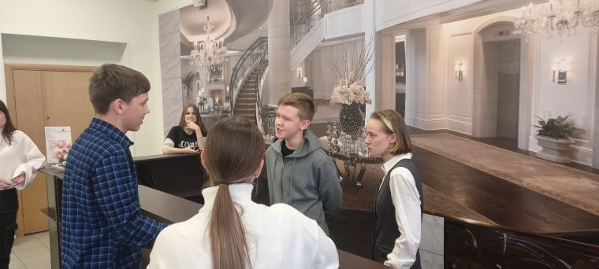
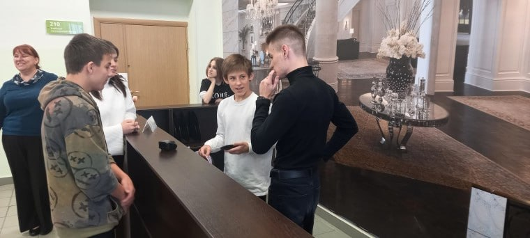
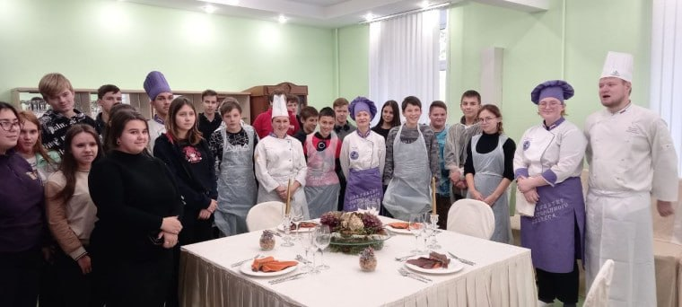
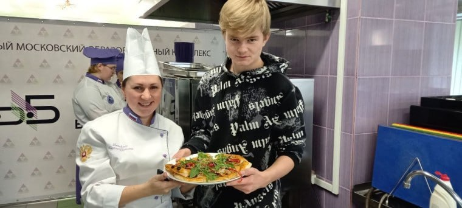
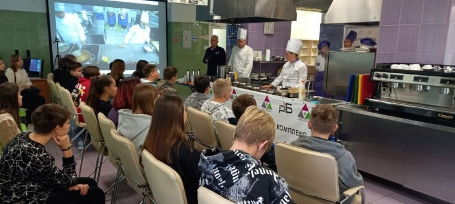
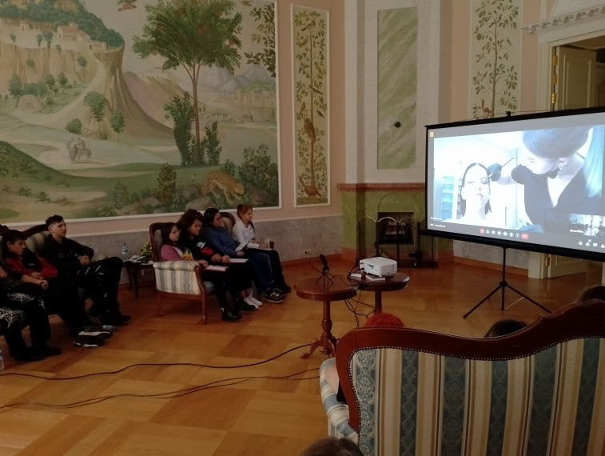
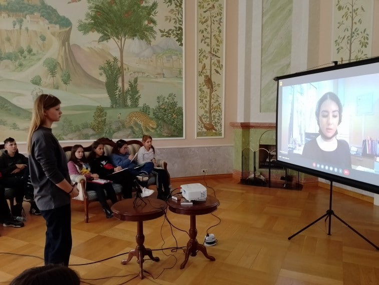
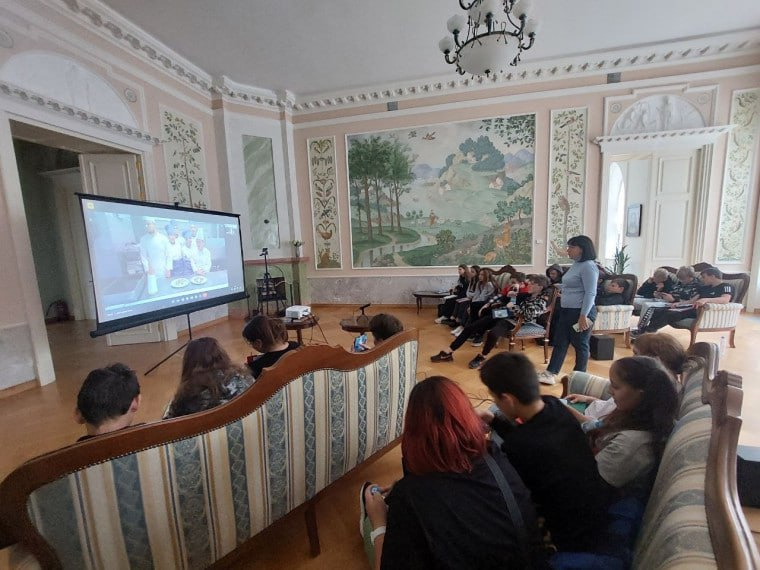
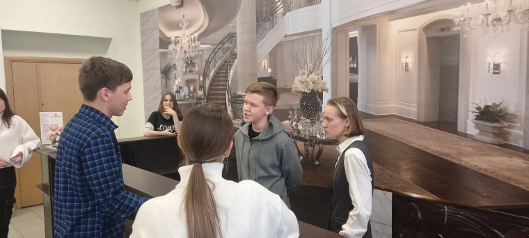
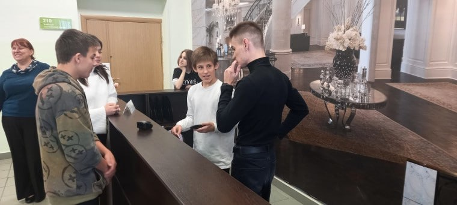
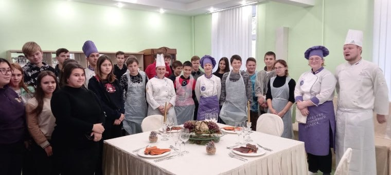
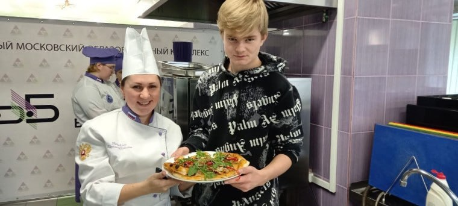
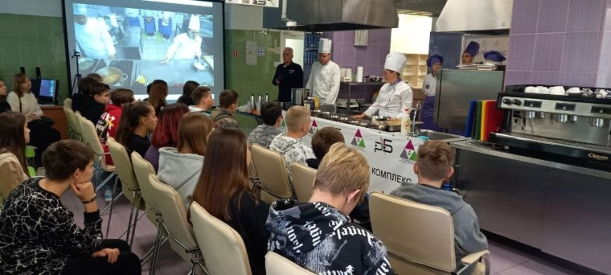
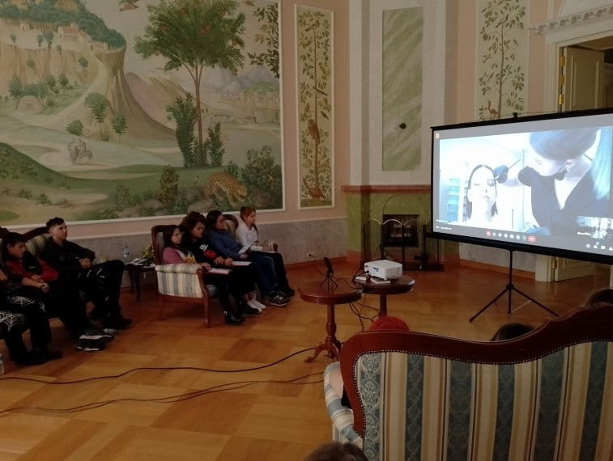
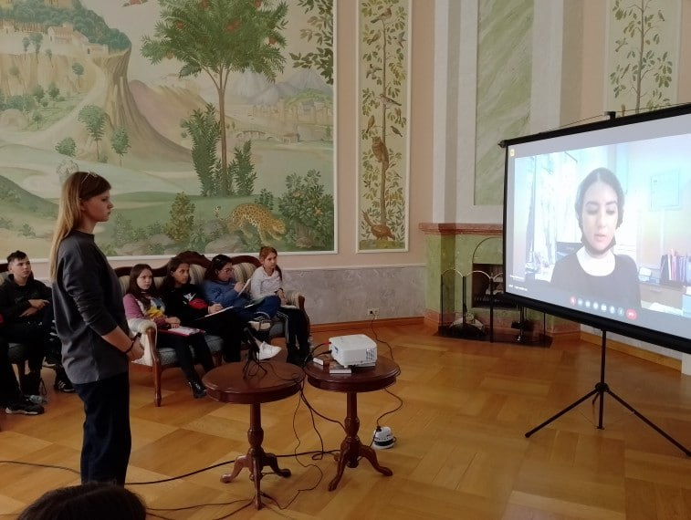
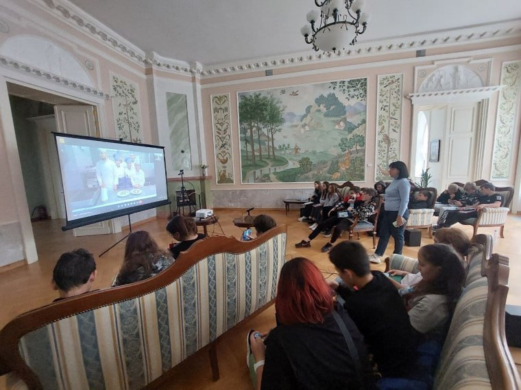
Новости
Новости на сайте
Загрузка новостей…